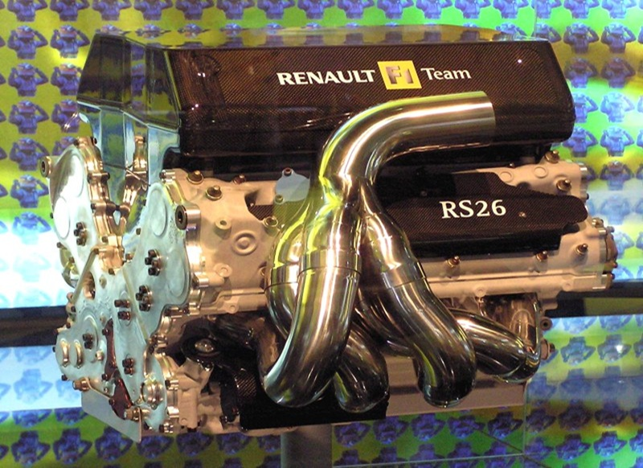
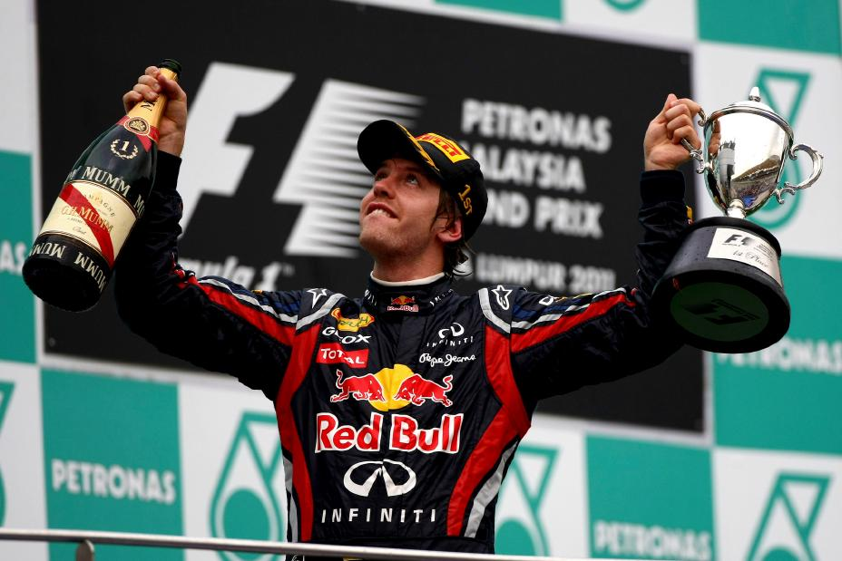
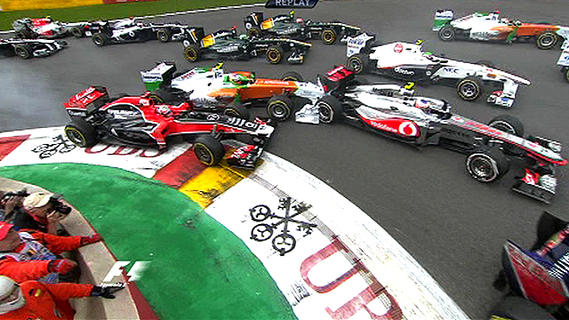
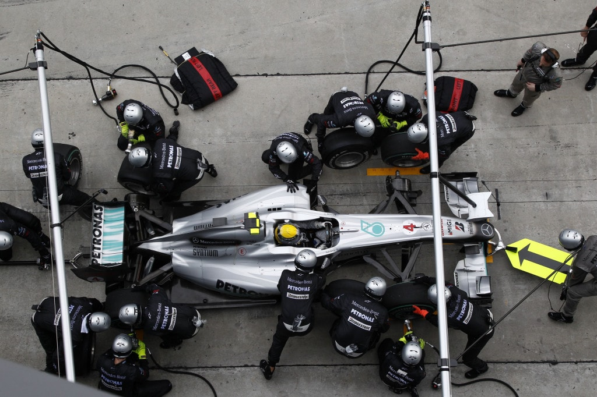

V8 Engine Explained
The V8 engine had 8 cylinders and was slightly smaller than the V10. Though they, were smaller, they still reached 18,000 RPMs and produced 130 decibels.

Vettel and Red Bull Racing
Sebastian Vettel and Red Bull Racing dominated the early 2010s. From 2010 to 2013, Vettel won four world championships in a row. He showed the world how strong the Red Bull car and the team were at the time.

Memorable Race
The 2012 Brazilian Grand Prix was a dramatic race where Vettel recovered from an early car spin and damage to finish 6th place in the race. This won him the drivers championship that year by just 3 points over Fernando Alonso.

Fun Fact
The 2012 season had 7 different winners in the first seven races, making it one of the most unpredictable seasons ever.